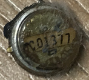
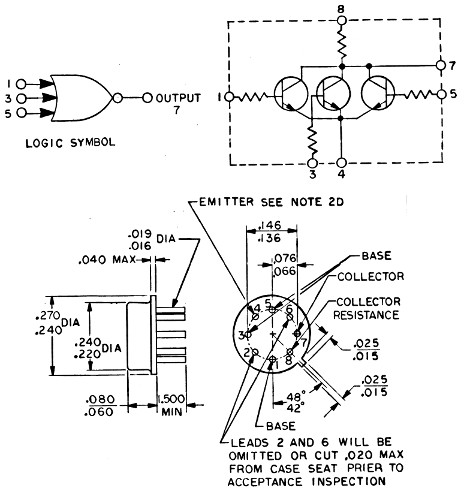
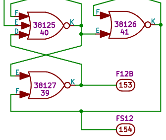
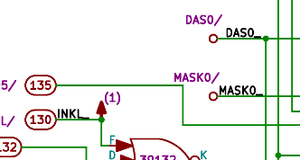
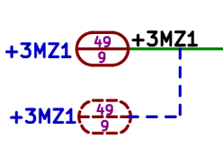
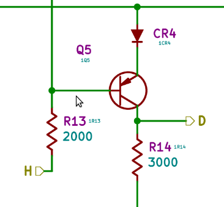

What this is all leading up to is that some of the CDU and early AGC (p/n 2003100 only) electrical schematic drawings:
- Do not list any ref's for NOR-gates, so we have no way of knowing from the schematics which individual NOR gate is packaged with any other into a dual-NOR IC; and
- Do not list any pin numbers for the NOR-gate inputs, so we have know way of knowing which of the interchangeable inputs any given input signal is hooked up to.
To get a sense of this, to the right there are two versions of
a sample (nonsense) circuit consisting of NOR gates, one with
refd's and pin numbers, and one without. In the right-hand
version, we know, for example, that pin U1A-J is connected to
pins U1B-F, U2A-F, and U2B-F. In the left-hand version we
know that the output from one NOR gate is connected to some
input or other on each of the other NOR gates. Imagine
trying to repair or discuss the left-hand version!
As far as the operation of the circuit is concerned, of course,
it makes no difference at all whether or not those refd's or pin
numbers are there, because all of the NOR gates are
interchangeable and all of the inputs to them are
interchangeable, so the OUTPUT we get from any given INPUT is
still exactly the same.
In the same way, you personally may not care one way or the
other which specific NOR gate is used for any given purpose in
the AGC circuitry, nor may you care which input pin is which on
those NOR gates. If that's so, you don't need to read any
further ... just go back to looking at the schematics presented
above on this page and enjoy!
But the truth is that the original AGC developers did care
which NOR gate was which and what pin number was what ... it's
just that for some reason they didn't find it convenient to put
that information directly into some of the schematic diagrams
for AGC p/n 2003100, and hence they chose to provide it through
some other mechanism. That mechanism is the so-called
"signal wiring diagram", and each of the schematic drawings in
the AGC 2003100 containing NOR gates had an associated signal
wiring diagram. Below, there's a "typical" (actually,
slightly more legible than usual) portion of a signal wiring
diagram:
You may be forgiven for thinking that this makes the situation
even more confusing to deal with, particularly since you are
quite correct about it, but it helps if you know how to read
it! When you know how to read it, it tells you which
NOR-gates are paired into which in the dual NOR-gate IC's, which
of the pair is the "A" member of the duet and which is the "B"
member, and which pin numbers the signals are hooked up to.
It doesn't tell you exactly how to specify the refd's of the
dual-NOR IC's, but we know from other versions of the AGC
roughly how they did that, so we'll talk about that later.
The first thing to notice is that one side of the diagram is
marked as LEFT and the other as RIGHT. In this drawing,
LEFT is at the bottom and RIGHT is at the top, but in other
drawings that's reversed, so try to think only of LEFT and RIGHT
instead of bottom and top.
Next, notice the little numbers written along the LEFT or
bottom edge (39155, 39145, 39149, ...) and RIGHT or top edge
(39156, 19151, 39152, ...). Those numbers are actually
written on the NOR gates in the schematics, in lieu of refd's,
and each individual NOR gate is identified uniquely by these
numbers. These are called "gate numbers". So, a pair
of such gate numbers could uniquely specify a dual-NOR
gate. The RIGHT numbers are the "A" NOR gates, and the
numbers opposite them on the LEFT are the associated "B" NOR
gates within the same dual NOR IC.
Before talking about the other stuff written on the diagram,
let's talk a little more about the dual-NOR ICs. The AGC's
were 10-pin rectangular packages, with the pins on them
variously labeled either numerically or alphabetically,
depending on the purpose of the discussion. We might draw
it like so, with the "A" NOR gate on the left and the "B" NOR
gate on the right:
Ignore the fact that the NOR gates now look like little rocket
ships; that may or may not be significant. Rather, the
important things to note are that there are VCC and GND inputs
to power the device, that the "A" gate has pins 1-4 (or J, A, B,
C), and that the "B" gate has pins 6-9 (or D, E, F, K).
If you look along the bottom (LEFT) edge of the signal wiring
diagram, you'll see a repeating pattern (from left to right)
consisting of
- a small square
- an even smaller circle
- empty position
- empty position
- empty position
- an oval with a number inside
- small circle
- empty position
- empty position
- empty position
- position with several possible markings
- position with several possible markings
- LEFT
- pin 10 (VCC) □
- pin 9 (K), the output ○
- pin 8 (F), an input
- pin 7 (E), an input
- pin 6 (D), an input
- a position unrelated to the dual-NOR
- RIGHT
- pin 1 (J), output ○
- pin 2 (A), an input
- pin 3 (B), an input
- pin 4 (C), an input
- a position unrelated to the dual-NOR
- a position unrelated to the dual-NOR
What about those weird, snake-like horizontal lines running lengthwise along the middle of the signal wiring diagram? Wires! Where the wire points downward, there's a connection along the bottom edge of the diagram, whereas when it points upward there's a connection along the top edge of the diagram. In the image below, I've added some false coloring to just one of those snakelike lines to focus the attention on it:
So according to the description I just gave, the wire makes a
connection to the following:
- NOR-gate at location 39155, pin 9 (output of a "B" NOR gate)
- NOR-gate at location 39107, pin 9 (output of a different "B" NOR gate)
- An oval with a very smudgy 111 written in it.
Maybe.
Now, if you know anything about electronics, you may be worried
that the outputs of two different NOR gates are tied
together. Don't worry, though, these NOR-gates have
open-collector outputs (or more precisely, open-collector with a
pullup resistor to VCC), and so they can be tied together to
increase their drive capacity (or to effectively increase the
number of NOR inputs for a single output) without any problem.
Perhaps I should finally say what some of these non-NOR
markings along the edges are:
- A numbered oval is a pin on the connector from the circuit to the AGC's backplane. In other words, a signal leaving or entering the circuit.
- A pointed box like <VCC> or <0V> is a power-supply or ground connection.
- A rectangular box with an alphanumeric label inside of it is an "inter-quadrant" connection, and we'll get to that in a moment.
At any rate, the point is that this red wire represents two
NOR-gates tied together to drive connector pin 111. Now, I
didn't mention it before, but this signal wiring diagram happens
to be from sheet 1 of
drawing 2005061D, and if we look at that drawing, we will
indeed find that connector pin 111 is being driven by NOR gates
39107 and 39155.
What is this "inter-quadrant" thing of which I spoke, and for
that matter, what is a "quadrant" anyway?
For these AGC modules, the connector from the module to the AGC
backplane has 4 rows of 69 pins each (numbered 1 to 71, but with
21 and 51 missing). Each one of those rows of pins
essentially has its own circuit associated with it, and these
separate circuits are called "quadrants". The concept of
the "quadrant" was used only for early dash numbers of the
2003100 AGC (such as the one we have schematics for!), and
disappeared for later 2003100 versions, and for the 2003200 and
2003993 AGC's, though much of the numbering of components on the
schematics remains tied to the quadrant concept even if the
quadrants themselves disappeared.
By "separate circuits", I mean logically separate rather than
physically separated onto different circuit boards, though
apparently that was originally what was tried. And
usually, the circuitry on the quadrants isn't entirely
logically independent of the circuitry on the other quadrants,
and in that case there have to be one or more electrical
connections between the quadrants of the module ... i.e.,
inter-quadrant connections.
In fact, the signal wiring diagram I've been showing you isn't
the complete diagram for drawing 2005061D, but simply the signal
wiring diagram for quadrant 1 of 2005061D. There are three
other quadrants, and therefore 3 other signal wiring diagrams
for this module as well. Most modules have a complete
complement of 4 quadrants, and thus have 4 signal wiring
diagrams associated with them. But some modules have less
quadrants and therefore less signal wiring diagrams.
So now all of the questions are answered except for
refd's. For that, I want to direct your attention just
above the row of gate numbers at the bottom edge of the signal
wiring diagram shown above, or just below the row of gate
numbers along the top edge. You'll see a row of tiny, tiny
numbers going from 1 (at the left) to 180 (at the right)
there. Or more accurately, you'll see rows of tiny smudges
that may or may not be numbers, but you can still see that there
are 180 of them. Let's call these things "smudge numbers",
for lack of a better term. The IC's are numbered
sequentially, starting at the end with the larger smudge
numbers, where we find U01, and moving toward the end with the
smaller smudge numbers, where we find U30.
Actually, there's some subtlety involve here. For
example, what happens if there's an open space, as there is in
our pictured signal wiring diagram at U23? Should we just
skip U23 in our numbering altogether, or should the next
position become U23 rather than U24? You could argue it
either way, but I'd vote for skipping U23 altogether, because it
helps preserve IC numbering across different hardware
versions. In other words, if a dual-NOR is removed or
added, it won't necessarily cause all of the refd's for the other
dual-NORs to change. But truthfully, we don't actually
know what the original designers did in this regard.
Another subtlety in the IC numbering is the quadrants:
The entire circuit module consists of 4 quadrants, and if we
followed the scheme just described, there would be 4 IC's
labeled U01, 4 labeled U02, and so on. Not good! So
in our CAD work we actually prefix the quadrant numbers to the
IC numbering. In other words, in quadrant 1, the IC's run
from U101 up to U130; in quadrant 2, the IC's run from U201 up
to U230; etc. Thus every IC ends up with a unique number
within the module, and we can still use that number to precisely
identify where it is located physically.
And finally, one last subtlety: Some of the quadrants
have signal wiring diagrams as shown, with LEFT on the bottom,
RIGHT on the top, and smudge numbers increasing from left to
right. Other quadrants are reversed, with RIGHT on the
bottom, LEFT on the top, and smudge numbers increasing from
right to left. My descriptions above are all still
correct, as long as you keep thinking of LEFT and RIGHT and
ordering of smudge numbers as I've urged, rather than thinking
of the top, bottom, right, and left edges of the signal wiring
diagram as you might otherwise be inclined to do. The
reason for this reversal seems to have to do with some of the
quadrants being on the front side, and some being on the
back side, with the numbering consequently mirror imaged.
Appendix: Signal Wiring Diagrams and the Block I AGC
For the Block I AGC, problems
similar to those described in the preceding section exist,
though the problems and solutions are different in detail.
In fact, read the preceding section before reading this one so
that you can have some background for the discussion in this
section!
One problem that can thankfully be ignored in the Block I AGC
is that the NOR-gate integrated circuit contains a single
triple-input NOR gate, packaged in a TO-47 can, rather than two
independent NOR gates packaged together in a flatpack, as in the
Block II AGC. That simplifies a lot. You can see
both a photo of such a gate (to the left) and a diagram
elucidating its pinout and internal circuit (to the right).
A problem the Block I "logic flow diagrams" (schematics
containing NOR gates) have that the Block II doesn't have, is
that there were apparently multiple hardware generations of the
Block I AGC that were mechanically quite different. In
particular, both the backplane-connector pin numbers and the
means for identifying the NOR-gate components differed from one
hardware generation to the next. The schematic diagrams,
meanwhile, showed the connector pin numbers and gate
identification for multiple hardware generations, thus making
them a tad more confusing than they might have been otherwise.
We don't actually know much about these different hardware
generations, but here's our current thinking on the
subject. We think there were three separate Block I AGC
hardware generations, which may have differed as
follows:
- The "AGC 4" generation: Might have been a rack-mount
computer. I.e., not of a similar size or shape to flight
models.
- The "AGC 4B" generation: Might have been the first with integrated circuits, as opposed to NOR gates constructed from discrete transistors and resistors as in the diagram to the right (which represents the internal structure of the NOR integrated circuit). Using integrated circuits would have miniaturized the circuit. The substitution doesn't affect functionality, so we'd expect software written for the one generation to execute properly on the other generation.
- The "AGC 5" generation: Might have been constructed more-or-less the same was as the flight computers were. I.e., in a similar form factor.
However, the Block I AGC schematics have the same characteristics as the early Block II schematics, in the sense that they do not display pin numbers for the (interchangeable) inputs of the NOR gates, nor do they indicate what we would think of as reference designators for the NOR gates. Of course, since there's was a single NOR gate per integrated circuit, the gate-number markings (like "2G5" or "65129) could basically serve double-duty as reference designators, and having a separate reference designator doesn't really serve much purpose, so perhaps there weren't any at all. Plus, each of the NOR gates in the example to the left has a single input ... but from the figure above, we know that pins 1, 3, and 5 of the NOR gate were all interchangeable, so which input is the one being used? They probably are not all the "middle" pin, pin #3, since that wouldn't always have been the pin it was most convenient to physically route a wire to.
At any rate, since the schematic doesn't have this kind of info in it, the information has to come from somewhere else. It must instead be deduced instead from the so-called "wiring diagrams". These Block I wiring diagrams, however, though quite similar in concept were quite different in detail from the Block II signal wiring diagrams described in the preceding section. The image below is a wiring diagram for the Block I "scaler" module, otherwise known as AGC modules A33 and A34. (Identical modules were plugged into slots A33 and A34.) The wiring diagram itself is drawing 1006127A, while the corresponding electrical schematic drawing is 1006547G. The original drawing was in black&white (at least, by the time we got it), but I've added various color notations to it for the purpose of this discussion.
Perhaps the first thing to note is that there are two separate circuits in this wiring diagram. There's the "even" half, depicted on the left-hand side of this diagram, consisting of the columns labeled
These two halves are independent of each other, in the sense that the only electrical connections between the two are via the backplane. In other words, if you wanted to connect a signal in the left half of the circuit to one in the right half, the signal would have to go out through the module's connector, onto the AGC backplane, then back up into a different pin on the module's backplane connector. There is a 142-pin connector (two rows of 71 pins each) to the backplane, with the the even half of the circuit using the even-numbered pins and the odd half using the odd-numbered pins, and in the diagram the connector pins are also depicted as circled numbers like
Each the two halves has 60 NOR gates, labeled in the diagram both by a "CIRCUIT NUMBER" and a "POSITION NUMBER", and are depicted in the diagram as objects like
The former are the normal NOR gates, while the latter are the
so-called "expander" or "fan-in" NOR gates, represented in the
electrical schematics by the following two symbols,
respectively:
As you can see, each of these NOR gates has 4 signals, as it is
supposed to, with the open circle being the output and the solid
circles being the three inputs. As as far as which
of the filled-in black circles represent which inputs to
the NOR gates, we don't actually have enough information about
how the wiring diagrams are interpreted to be able to
tell. On the basis of the fact that these circular objects
visually represent the bottom side of the NOR-gate TO-47 cans
(see the figure at the top right of this section), my
interpretation would be:
Of course, a mirror image of this arrangement, or indeed any
other permutation of pins 1, 2, and 3 would logically be equally
possible.
Note too that some or all of the NOR-gate pins have solid black
lines going to them, and of course these represent the
wires. All of the fat, solid, black lines in the wiring
diagram are wires.
The final factoid needed to interpret the diagram is to note
that each of the circuit halves seems to have wires that exit to
the left or to the right, and then just stop in mid-air, so to
speak, without actually connecting to anything. Notice, however,
that the wires exiting to the left and the right are exactly
paired with each other: for each wire exiting to the left,
there's one at the exact same position vertically exiting to the
right. This is intended to mean that those two dangling
wires are connected together as the same signal. I've
added a couple of blue lines to the diagram to make this point
graphically.
Actually, to avoid being misleading, I should admit that it's a
little trickier than this sometimes. The true is that
there's not necessarily a unique match between the
dangling wires exiting to the left and those to the right, so
sometimes you have to work it out using the schematic as a
reference. The figure below is an excerpt from a different
signal-wiring diagram that shows this ambiguity. I can't
really give you any advice on resolving such ambiguities, other
than to say that if you trace through the wires, you'll
(hopefully always) find that one of the possible connections
makes no sense with respect to the associated schematic, and
that the other one does.
Ignoring complications like that, which are fortunately in the
minority, let's work out an example in detail. Consider
the NOR-gate with CIRCUIT NUMBER "--039" at POSITION NUMBER "02"
at the upper left of the wiring diagram. (You'll have to
click on the wiring diagram image shown earlier to expand it, in
order to understand the description below.) In the wiring
diagram, we see that:
- The output of --039, pin 7, exits to the left, where it wraps around and connects to a corresponding wire dangling at the right, and eventually ends up at connector pin 02.
- Input pin 1 of --039 comes from a signal that comes from or goes to the following places:
- Output pin 7 of NOR gate --035.
- Input pin 1 of NOR gate --037.
So ... how well does this correspond to what the corresponding
electrical schematic drawing, 1006547G,
says is supposed to be happening? Well, wonder no
more! Here's the relevant excerpt from the schematic, and
as you can see, it is exactly as our interpretation of the
wiring diagram says it ought to be:
But finally, a word of caution: The match between electrical schematics and their associated signal wiring diagrams is not always as perfect as the explanation above implies. Of course, the Apollo Program preceded the availability of computerized CAD systems which could have automatically generated error-free signal wiring diagrams (if they were even needed at all!) directly from the schematics. In other words, both the schematics and the wiring diagrams had to be separately, manually drawn ... naturally, we'd expect occasional errors just on that account. But it's somewhat worse than that. Consider the example we've been using, namely schematic 1006547 and associated wiring diagram 1006127. This block of circuitry has NOR-gates labeled "--000" through "--079", plus additional NOR gates in the range "--301" and above. The schematic and wiring diagram match perfectly for the range 000-079, but completely differ for the range 301+, as if completely different circuits were being described by the schematic and the wiring diagram. And that may indeed be what happened, since the wiring diagram was drawn in February 1963, some three months prior to the schematic in May 1963. Possibly there had been second thoughts about the partitioning of the circuitry into modules in the interim. Thus where the schematics and wiring diagrams match, we should feel confident in using the information we find in the wiring diagrams to supplement what we find in the schematics, but we need to be aware that they may not match, and that we must be prepared to work from whichever one of those two is "correct".
All very well and good! But how do we know which, if either, is correct? I suppose I'd generally vote for the schematic, if only because the wiring diagram is a much less satisfactory way of visualizing how the circuit works. This is particular example of drawings 1006547 and 1006127, though, there are lots of circumstantial factors that would make us choose the schematic over the wiring diagram:
- The schematic was drawn 3 months later than the wiring diagram, and is therefore more current.
- We have 2 revisions of the wiring diagram vs 8 of the schematic, so gross errors seem less likely to have survived in the schematic than in the wiring diagram.
- The documentation in AC Electronics ND-1021041 matches the schematic rather than the wiring diagram.
Appendix: Auxiliary Software
Introduction
Along with the various scanned engineering drawings, CAD
transcriptions, drawing indexes, assembly drilldowns, and
engineering-drawing search engine we provide, there's also a
certain amount of software available to help create and
maintain all of that data. Most of it is undoubtedly
of little use to anybody not intimately involved in such
maintenance. But there are a few programs, such as the drilldown.py
and drilldownCompare.py programs already described above,
that can be of slightly wider (though still very
specialized) utility.
On that chance, this Appendix provides a very-brief rundown
of some of that additional software. Except where
otherwise stated, such software is generally found in the
software repository's "schematics" branch, in the
Scripts/ folder, so you can likely find programs there
that I choose not to mention here.
| Program |
Brief Description |
More Information |
|---|---|---|
| Context:
Transcription to KiCad of G&N electrical
schematics |
||
| MakeConnector.py | Creation of custom KiCad schematic symbols for connectors. | As
far as how to specify the characteristics of a
particular connector configuration, see the comments
in the code itself. What the program
actually creates is a KiCad .lib file that contains
the definition of the connector. In current
practice I treat that .lib file as being temporary,
because I then use KiCad's symbol-library editor to
"import" that symbol from that .lib file into the
"AGC_DSKY" symbol library, and then delete the .lib
file itself. See
also the explanation of connectors in the README. |
| MakeDualNorLib.py | Creation of custom KiCad schematic-symbol libraries for NOR gates. | As far as how to specify the NOR gate library to be created, see the comments within the code itself. Most variations relate to the (hardcoded) power-supply and return signal names, though there are additional configurable items such as expander vs non-expander, display of pin numbers vs no display of pin numbers, numerical pin numbers vs alphabetical pin numbers, and Block II vs Block I vs ND-1021041. What the program actually creates is a KiCad library containing all parts of the multipart symbol, in all variations of ordering of input pins (including missing pins, which are tied to the power-supply return). The only configuration omitted is that of no input pins — i.e., of all input pins being tied to ground. (An oversight on my part.) The library itself should simply be retained permanently along with the other libraries, and is typically named according to the pattern D3NOR-VCC-GND[-OPTIONS].lib. See also the explanation about libraries in the README, and the discussion of NOR gates as well. |
| autoplaceKiCad.py | Semi-automated placement of
connector-pad and NOR-gate symbols into KiCad
schematics. |
See
the extended discussion below |
| printKiCad.sh | Creation of PNG images of KiCad schematic sheets. | Requires bash
(or similar), sed,
and ImageMagick.
The schematic sheet is first "plotted" to Postscript
format in the KiCad schematic editor, and then the
script is run to convert Postscript to PNG. Any
number of Postscript plots can be specified at the
script's command line. The functioning of the
script is quite simple: It uses sed to
stylistically correct dashed lines (whose unalterable
pitch in KiCad is not consistent with the large
physical dimensions of G&N sheets), and then uses
ImageMagick to convert the corrected Postscript to
PNG. See
also the explanation of printing in the README. |
| blockAnnotater.py | Semi-automated correction of
reference designators in KiCad hierarchical schematics
to agree with G&N engineering drawings. |
See
the extended discussion below |
| eelint.awk | Semi-automated correction of artifacts in KiCad schematics, such as wires that are not quite horizontal/vertical or which have short jogs in them. | See
the extended discussion below |
| listConnectors.awk | Generation of list of captioned
connector pads from a KiCad schematic. |
See comments in listConnectors.awk,
listConnectors.sh,
and listConnectorsAllModules.sh |
| Context:
Verilog-based simulation of Block II AGC electrical
schematics. |
||
| pins.txt | Database of Block II AGC backplane
signals |
This is created by opening Mike
Stewart's pin database in sqlite,
and dumping it in CSV format. The options required
are: Space as field delimiter, no quotes around
fields, no header line for field names. |
| bin_to_verilog.py |
TBD | TBD |
| dumbInitialization.py | Creation of a set of flip-flop
initializations. |
See
the Appendix of the digital-simulation page |
| dumbTestbench.py | Creation of a Verilog test-bench
file. |
See
the Appendix of the digial-simulation-page |
| dumbVerilog.py | Conversion of a logic-flow diagram's
netlist to Verilog. |
See
the Appendix of the digital-simulation page |
| extractInstructionsFromTIM.awk | TBD | TBD |
| extractMikeGates.awk | TBD | TBD |
| instruction_trans_decoder.py | TBD | TBD |
| makeGateTranslate.sh | TBD | TBD |
| netlisterOP2.py | TBD | TBD |
| pooh.py (plus normalizedMikeNets.py) | TBD | TBD |
| Context: Verilog-based simulation of Block I AGC electrical schematics | ||
| pinsBlockI.txt | TBD | TBD |
| pinsDbBlockI.awk | TBD | TBD |
| Context: Customization of engineering-drawing search engine: | ||
| tipuesearch.js | The principal code for the
engineering-drawing search engine. |
This code came from Tipue Search,
but has been modified to provide customized formatting
for search results, and could be additionally or
alternately customized for offline usage. The
code itself is here. |
| tipuesearch_content.js | The master engineering-drawing
database in JSON format. |
Probably the only non-obvious thing
thing is that in URLs, the substrings of the form @N@
need to be replaced by prefixes[N]. The
code itself is here. |
| AgcDrawingIndex.py MakeTipueSearch.py |
Creates the engineering-drawing
database from index pages (HTML) on the website. |
Creation of the master
engineering-drawing database is a two-step process, in
which the AgcDrawingIndexXXXX.html pages from
the Virtual AGC website are processed first by
AgcDrawingIndex.py and then by
MakeTipueSearch.py. For more information, refer
to the comments in the
AgcDrawingIndex.py source code. |
| unpunch.py | Extracts metadata and renames
scanned G&N engineering drawings scanned from
aperture cards at NARA SW. |
This would be useful only to someone
who had access to raw scans of boxes of aperture
cards. The code is specific to aperture cards in
which the punched metadata conforms to the
marking-format printed on the cards themselves (or at
least the ones I've seen). G&N drawings in
box range 430-470 (MIT, AC Electronics, Kollsman,
...); I cannot speak for other ranges, but North
American Aviation boxes do not conform.
Nevertheless, the idea behind unpunch.py is sound, so
if it were altered to a different formatting pattern
it could be useful for it as well. See
the extensive comments in the code itself. |
Program: autoplaceKiCad.py
This program assists in semi-automatically placing
connector pads and NOR-gate symbols into a KiCad
schematic. It is used if you are transcribing a
G&N "logic-flow diagram" into KiCad. The
code itself is here.
In creating a CAD transcription of a G&N "logic-flow"
diagram, manual choice of the appropriate connector and
NOR-gate library symbols within the KiCad schematic editor
(which is called "eeschema") can be quite cumbersome and
time-consuming. The autoplaceKiCad.py program greatly
eases and speeds up this process, in my opinion. As
input, the user provides a text file that:
- Roughly divides the physical area of the schematic diagram into rectangular blocks.
- For each block, provides a textual description of the connector pads and NOR gates in that block.
The program then does a sanity check to expose duplicated
pins or gates, or to find various inconsistencies in pin
numbering, inconsistencies in the way individual NOR gates
must be combined into dual-NOR gates, etc. If those
checks pass, it outputs a KiCad schematic containing nothing
except the specified components. That operation looks
something like this:
autoplaceKiCad.py <INPUT.autoplace >OUTPUT.sch
The user can then:
- Add the component data from OUTPUT.sch to his
own schematic using a single cut-and-pasted operation with
a text editor program. (Don't cut-and-paste
within KiCad itself, or else it will "helpfully" reset all
of the reference designators in the pasted block.)
OUTPUT.sch is a complete, valid schematic, so you
just cut from the first "$Comp" to the last
"$EndComp". I usually paste just prior to the
"$EndSCHEMATC" that appears at the very end the file.
- Edit the now-combined schematic with the KiCad schematic editor, into the background of which the original scanned logic-flow diagram has been placed.
- Within the schematic editor, manually move each component where it belongs (relative to the background image).
This may sound like a cumbersome operation (and it
is!), but experience shows pretty conclusively that it is
actually quite a bit faster and far less error-prone than
directly manually adding components within the KiCad
editor. At least for me!
IMPORTANT NOTE: The workflow described above
allows autoplacing a bit of the schematic at a time, rather
than autoplacing all components in one pass. That
temptation should be resisted. Sometimes that
piecemeal approach is appropriate, but you have to be very
careful. The thing you have to be sure of is that both
parts of each dual-NOR are handled in the same autoplacement
pass, because otherwise the program will not be
able to be able to assign the same library symbol to the two
parts. Piecemeal work also bypasses a lot of
consistency checking as well, for things like duplicated
parts. These problems will all be discovered later, of
course, if KiCad's design-rule checker is run, but the
inconsistencies will be a lot harder to fix manually in
KiCad than they would have been in INPUT.autoplace.
So it's safest to just have one big INPUT.autoplace
file and to autoplace all of the components in one
pass. You have been warned!
Before continuing, I should probably point out that the
scanned image used for the background image in the schematic
editor has to be prepared pretty carefully if you want it to
be maximally useful. For one thing, if a sheet of the
drawing was scanned in several frames, those frames must be
recombined to produce a single unified image. The image must
be scaled correctly; for example, if the original drawing is
"E" size, then the scanned image must be scaled to be
exactly 44"×34". Moreover, it should be
rotated/stretched in such a way that vertical lines are
vertical and horizontal lines are horizontal, and that the inner
boundary of the drawing's border is 0.5" from the edges of
the image. If the full-resolution scanned image is
loaded into the schematic editor, it's probably going to be
quite logy, or perhaps even unusable. So the PPI of
the background image should probably be changed (whilst
preserving the correct physical dimensions!) as low as you
can stand. Typically, I use 50 PPI, but on some
occasions have gone as low as 20 PPI. I won't trouble
you with exact details how to perform each of these
steps. Rather than loading the background image
scan into the schematic file, it is actually loaded into the
KiCad "template" (*.wks) file for the design, using KiCad's
worksheet editor program. (And removed from it
prior to committing anything to GitHub, please since the
template file will now be enormous!)
In its simplest form, INPUT.autoplace looks
something like this:
This defines a single rectangular block on the schematic, width inches wide, with an upper left-hand corner located x,y inches from the upper-left corner of the schematic. In OUTPUT.sch, the placed component will appear in rows starting at the top of this block and working downward as each row is filled up. In other words, it doesn't place the components exactly where they need to go, but just in the general vicinity. The J and N lines represent symbols to be placed on the schematic, and don't have to appear in the order shown. Plus, there are other kinds of symbols the program can add that I haven't put into the example. These symbol lines can be in any convenient order, though the most convenient order in terms of moving the symbols to their proper locations later are going to involved sweeping through the block row-wise, from left to right.W= width
L x y
J pin1
J pin2
J pin3
...
N gate1 loc1 a1 b1 c1
N gate2 loc2 a2 b2 c2
...
Each J line represents a connector pin (an oval pad) with the associated pin number (pin1, pin2, or pin3 in the example shown).
Similarly, each N line represents half of a dual 3-input NOR gate. The associated gate number (gate1 or gate2 in the example) is a 5-digit number written directly on the gate in G&N logic-flow diagrams. Similarly, the location number (loc1 or loc2) is a 2-digit number written directly on the gate in the diagram. The gate numbers are all unique, and no specific gate number can recur. However, the location numbers relate to the chip rather than the gate, and since the chips are dual-NORs, each location number actually appears twice, with two different associated gate number.
Because these are triple-input NOR-gates, each has 3 inputs. For the "A" half of the dual-NOR, the pins are labeled A, B, or C, while for the "B" half they are labeled D, E, or F. Thus the pin numbers ("a1 b1 c1" or "a2 b2 c2" in the example) are "A B C" or "D E F" ... but not really! The original schematics were drawn very flexibly, so that the pins might actually be in other orders, such as "B A C" or "C B A". But more than that, the pins might be omitted completely in the drawing, with any missing pin implicitly being grounded. We represent missing pins as ";" or "_", so "a1 b1 c1" could actually be "_ A _" or "C B _". (When I created the symbol libraries and autoplaceKiCad.py, I neglected to consider that all the input pins might be grounded, "_ _ _", so I don't provide for that case.)
In terms of actual numbers, therefore, our example INPUT.autoplace could perhaps be:
W= 10But this just scratches the surface. In no particular order, here are some of the other variants that can be briefly described:
L 13.5 1.2
J 153
J 154
J 155
...
N 38125 40 F E D
N 38126 41 F _ E
...
- Blank lines or comments (prefixed with "#") are ignored.
- Multiple "W="/"L x y" blocks can
appear in the file, thus tiling the sheet into rectangular
blocks, of possibly differing sizes/shapes.
- J lines represent connector pads (visually, ovals wider than their height) with the wires exiting to the right. There are also j lines, also connector pads, in which the wires exit to the left. Similarly, the wires on K pads exit to the bottom and those of k pads to the top.
- J, j, K, k lines can also have from 1 to 4 optional symbolic labels representing associated backplane signal names. For example, "j 153 F12B".
- Rather than an N line, you could use an X line ... which acts the same but specifies an "expander" NOR gate rather than a normal NOR gate.
- There are also O lines ("oh", not "zero"), not shown in the example, of the form "O netname", such as "O DAS0/". These place a symbol having just one pin (exiting to the right) that looks like a small open circle with a label next to it. This is a common way to represent intrasheet connections in G&N schematics.
- There are also A lines, not shown, of the form
"A digits", such as "A 1".
These place a symbol that looks like an up-arrow with a
number (digits) in parenthesis above
it. It has no electrical function, but is used in
some G&N schematics to indicate how many other points
in the schematic sheet are implicitly electrically
connected to it, as opposed to being directly connected by
a visual wire. Those other connections are the O
lines mentioned above. Since the associated
schematic symbols do not actually enforce any electrical
connectivity between the two points, it is necessary to
manually add matching KiCad netnames to the wires
associated with the symbols for the O and A
lines. That is done in the KiCad editor rather than
in the INPUT.autoplace file.
- If the 2nd field in a J or N line is ".", then the pad number, gate number, or location number simply autoincrements. Note that autoincrementing connector-pad numbers remain in the ranges Nnn where nn is 01-20, 22-50, or 52-71 (as would be required for Block II AGC logic modules). Incidentally, for Block II, the format of such an N line changes to "N . n", where n is 1, 2, or 3, and is simply the number of input pins.
- In addition to N and X lines, it is
also possible though rare to have otherwise-similar lines
that instead begin with N1, N2, N3,
N4, X1, X2, X3, or
X4. This is discussed along with the
general "N=" directive below.
- General:
- "G= start". Changes the default starting point (0) for autoincrementing NOR-gate numbers in N lines to start.
- "P= start". Sets the starting number for autoincrementing connector pads (defaults to 1).
- "N= symbol refd" (and N1=, N2=, N3=, N4=). Sets the schematic-symbol library name (symbol) and the reference designator prefix (refd) used when placing NOR-gates onto the schematic. The available NOR-gate symbol libraries are named D3NOR-*.lib, and any path or filename extension is omitted in symbol. The reference designator for any individual NOR-gate is automatically formed by prefixing refd to the gate's 2-digit location code, and refd will be something like "U1", "U2", "U3", or "U4"; thus, the resulting reference designators will typically be of the form U + 3 digits. This scheme is based on the way the sheets of a typical G&N logic-flow diagram are structured, in that each of the sheets will have 2-digit location codes in the range 01-30, so that it is necessary to have unique prefixes for each sheet to make sure that reference designators are unique as well. Note, by the way, that an "N=" directive applies to the entire set of N lines in INPUT.autoplace, and not just to the ones that ones that follow it. Sometimes, though rarely, not all NOR-gates on a given sheet come from the same symbol library. Sometimes also, though even more rarely, a schematic will have a single sheet in which a combination of U1nn, U2nn, U3nn, and U4nn reference designators appear on the same schematic sheet. Neither of these latter two rare cases can be implemented using N and N= lines as just described. For those cases, N1, N2, N3, and N4 lines are provided. They work exactly like N lines, but essentially provided non-overlapping "namespaces" — i.e., they allow the use of independent library symbols and reference-designator prefixes by means of their own directives "N1= symbol refd", "N2= symbol refd", "N3= symbol refd", and "N4= symbol refd".
- "X= symbol refd" (and X1=,
X2=, X3=, X4=). Same
as above, but for expander NOR-gates.
- Specific to Block II:
- "module= moduletype". This
option is primarily used to modify how reference
designators are chosen for connector pads, based on the
pin numbers. The choices for moduletype
are A52, B1, and B, and
the interpretations are:
- By default, if this option isn't used at all, connector-pad numbers 101-171 select reference designator J1 (symbol "ConnectorA1-100" in symbol library AGC_DSKY), 201-271 select J2 ("ConnectorA1-200"), 301-371 select J3 ("ConnectorA1-300"), and 401-471 select J4 ("ConnectorA1-400"), which is suitable for all Block II AGC logic modules.
- B1: Suitable for modules with pinouts like module B1, namely pads 101-124 select J1 ("ConnectorB1-100"), 201-224 select J2 ("ConnectorB1-200"), 301-324 select J3 ("ConnectorB1-300"), and 401-424 select J4 ("ConnectorB1-400").
- B: Connector pads 101-169 select J1 ("ConnectorB8-100") and 201-269 select J2 ("ConnectorB8-200").
- A52: J1 ("ConnectorA52"). This also has the side effect of changing the NOR-gate pin-numbers to "2", "3", "4", "6", "7", "8" (and "_" or ";").
- "full71". As mentioned above, the default connector type used in the absence of a "module=" directive, is appropriate for a Block II AGC logic module: 4 rows of 71 pins each, with the 21st and 51st pins of each row removed. If full71 is used, the missing 21st and 51st pins are restored to the default (by instead using library symbols "Connector-100", "Connector-200", "Connector-300", and "Connector-400").
- "GP= prefix". As explained above, in each N or X line, the NOR-gate has a 5-digit "gate number" associated with it. If the leading digits are always the same — or indeed, if they are not all digits — then this directive can be used to specify what the leading characters are. It is then only necessary to enter the remaining digits within the N or X line, and the prefixed characters bypass the sanity check. For example, a gate number of "6_123" would be illegal if appearing directly in an N or X line, because it doesn't consist entirely of digits. However if "GP= 6_" were used, then just "123" would used as the gate number in the N or X line. The resulting gate number would still be "6_123", but the result would now be legal. To use this approach, however, all of the gate numbers would begin with "6_".
- "noloc". If this directive used, then
the 2-digit location numbers are not visible on the NOR
gates. They are still present, but simply marked
internally as being invisible, and can be accessed or
visually restored by editing the NOR gate within KiCad.
- Specific to Block I:
- "block1". Indicates an official Block I drawing. In such circuits, the chips have one NOR-gate each (rather than two), and the input pins are "1", "3", "5" (and "_" or ";" if missing) rather than "A", "B", "C", "D", "E", "F". Moreover, there were two separate implementations of the circuits, referred to as AGC4 and AGC5, resulting in two separate NOR-gate gate codes and two separate pin numbers for each backplane-connector pad. The formats in INPUT.autoplace were altered accordingly: "N loc gateAGC4 gateAGC5 pin1 pin2 pin3" and "J pinAGC4 pinAGC5 signal". The AGC5 gate codes are the usual 5-digit numbers, but the AGC4 gate codes are like "1F4" or "2D3".
- "shadow1". Implies and depends on "block1". If present, connector pads (J lines) are automatically supplemented by an additional connector pad of identical appearance (but no electrical function) but having a dotted outline. Such pads are used in some Block I logic flow diagrams to indicate alternate backplane signals.
- "mirror1". Implies and depends on "shadow1"
and "block1". Reverses the pin numbering
(assuming a 142-pin connector) between a J
connector pad and its shadow.
- "nd1021041". Overrides "block1". This is used for schematics recovered from Block I descriptive document ND-1021041, which have various differences stylistically from the official drawings. Moreover, there are no 2-digit location numbers for NOR-gates in ND-1021041, so N lines become just "N gate a b c".
- "bit". Uses 3-digit gate numbers rather than 5-digit ones, and automatically prefixes them with "xx". This is for schematics of a module that can be plugged into 16 different backplane slots, and in practice applies only to Block I logic modules A1-A16. If used, then J lines have 16 backplane-signal labels rather than the limit of 4 mentioned earlier. However, these labels are internal to the CAD and not displayed on the schematic.
- "dupej". Some Block I drawings have
duplicate connector pads with identical pin
numbers. This not allowed in KiCad, so normally it
would be flagged as a fatal error by
autoplaceKiCad.py. There are various non-fatal
ways to handle such cases. One way is the "dupej"
option. If used, whenever a duplicated J
line is found, the 2nd instance an onward are replaced
electrically by O lines.
Program: blockAnnotater.py
Also
see the explanation of reusable circuit blocks in the
README file.
In transcribing Apollo G&N electrical schematics to
CAD, we want all component reference designators to match
those used in the G&N engineering drawings, and we
particularly want reference designators appearing in
netlists and electrical simulations to be accurate with
respect to the original drawings. This is not a
problem for most transcribed drawings but becomes a problem
for some schematics of analog circuitry in which the circuit
comprises hierarchical blocks which appear in multiple
instances. For example, suppose the main circuit had a
block (let's call it block "P") which is used 5 times.
In KiCad, the natural way to deal with this is a process
called "annotation", in which KiCad assigns distinct
reference designators to each component appearing in each
instance of block "P". Natural or not, the rules
applied by KiCad do not correspond to the reference
designators in the G&N engineering drawings
themselves. For example, if there were a resistor that
we had called R3 in block "P", KiCad might annotate those 5
instances of the resistor as R3, R101, R201, R301, and R401,
whereas the G&N drawings might refer to them as 1R3,
2R3, 3R3, 4R3, and 5R3. The latter, of course, is what
we want.
Working around this problem involves a semi-automated
process with several steps:
- In the top-level drawing, the
hierarchical blocks with multiple instances have to be
given sheet names corresponding to the prefixes attached
to the reference designators in them. Usually,
these will be sheet names "1", "2", "3", and so on.
In fact, blockAnnotater.py will strip any suffixed
non-digit characters from the sheet names, as well as
certain prefixes ("--", "xx", "XX") so sheet names like
"1P" or "xx5Q" can be used just as easily as "1" or "5",
if necessary to more-closely match the appearance of the
original drawings. As for where these numerical
prefixes come from, they cannot be deduced from the
schematics, but instead have to be pulled from associated
engineering drawings for the assembly containing the
circuit, such as from photographic
masters of insulators, wiring
boards, etc.
- In the reusable circuit blocks, using the KiCad schematic editor, edit each component, as follows:
- Add a new field called "baseRefd". Mark it as
visible, and assing its value as the reference
designator as shown in the original engineering drawing.
- Mark its actual reference-designator field as
invisible. Or alternately, perhaps preferably in
some ways, leave it visible but assign it a smaller font
size and move it close to the visible location of the
baseRefd field so that it is clearly subordinate to
it. The image to the right illustrates the latter
alternative; in it, markings like Q5 and R13 are the
baseRefd field, whereas those like 1Q5 and 1R13 are the
true reference designators.
- Use KiCad's annotator tool to assign reference designators to the reusable circuit blocks.
- Exit KiCad and use blockAnnotater.py to reassign the reference designators which KiCad just assigned.
The actual reference designators assigned in the reusable
blocks by blockAnnotator.py are
This is the appropriate formula in most cases, but there
are a few cases in which the prefixes derived from the
parent sheet name simply don't correspond to the
chile-component prefixes in the engineering drawings.
A numerical offset can be defined that changes the formula
instead to
(prefix derived from parent sheet name + numerical offset) concatenated to (child component baseRefd)
(Notice that the "+" is meant to be a numerical
addition.) The way this is done is by tweaking one of
the 4 comment fields of the child schematic. If any of
these comments is changed to
then N is used as a numerical offset to the
component prefixes within that child block.
At present, only two levels of drawings (parent + child)
are supported, and this has proven sufficient for all
G&N schematics encountered so far. If any
three-level drawings (parent + child + grandchild) are ever
discovered, the software will need to be reworked.
Regarding the two different options listed above as to how
to treat components' true reference-designator fields, both
options have arguments in their favor. If the true
reference designators are made invisible, the schematics
(and in particular their PNG renderings) will look just like
the original drawings. On the other hand, particularly
in editing the CAD files, it obscures the fact that the
markings shown are not the true reference
designators, as well as obscuring the fact that the
different instances of the block have different reference
designators. The choice as to whether or not to
display the true reference designators is therefore
partially a question of personal aesthetics.
Actual details of usage and additional documentation can be
found in the
blockAnnotater.py source code.
Program: eelint.awk
In manually editing G&N schematics in KiCad's schematic
editor — and in particular, in adapting an existing CAD file
for a different but similar version of the circuit — it's
extremely easy to leave it littered with junky-looking
constructs such as:
- Items not aligned to the 25-mil grid we use for G&N drawings.
- Wires with a tiny inclination to exact horizontal or vertical.
- Wires with tiny jogs in them.
- Stray, short wires attached electrically at one end but dangling from the other, sometimes causing spurious junctions (fat dots) to appear.
The program eelint.awk analyzes a schematic to find such
problems. In its simplest form, the program is run as
follows:
Yes, the input schematic does appear twice on the command line, and it is not a typo. The script outputs error messages about the problems it has found to stderr, and outputs a completely new schematic file to OUTPUT.sch to stdout. The input file is not changed at all. If there are no error messages, then the output file should be the same as the original and can simply be ignored.
However, if errors are found, then the output file will be like the original but with the addition of markers that have been inserted where the errors are thought to be. If OUTPUT.sch is edited in KiCad, you can simply do a text search for "eelint" (which is the name of the marker symbol that has been inserted). The idea is that you find all of these markers, manually edit away the problems, then remove the markers. Once you're satisfied, OUTPUT.sch can simply be "saved as" with the original file's name. Obviously, there's a danger here of overwriting the wrong thing, so care is required.
Consult the source code for additional instructions and info.

{kind=link}
{kind=link}
{kind=link}
{kind=link}
{kind=link}
{kind=link}
{kind=link}
{kind=link}
{kind=link}
{kind=link}